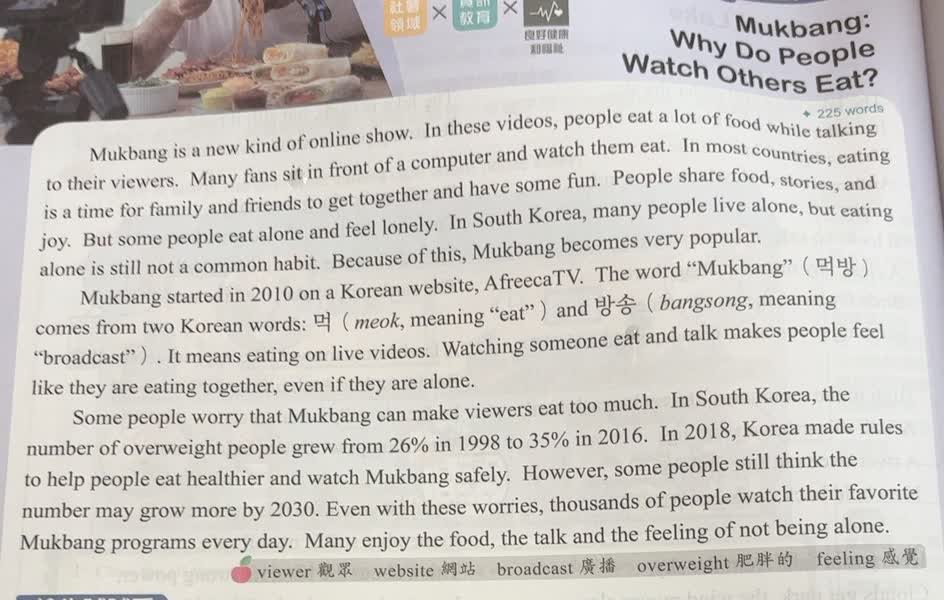
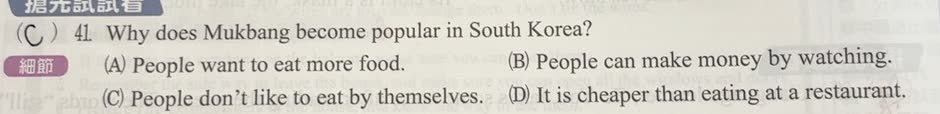
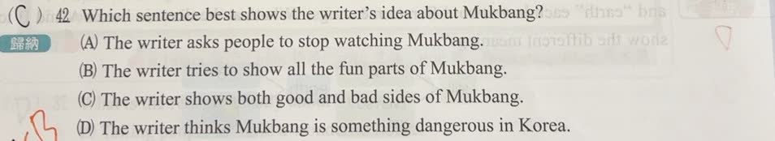

完整原題
作答所需文章／材料
Mukbang: Why Do People Watch Others Eat? Mukbang is a new kind of online show. In these videos, people eat a lot of food while talking to their viewers. Many fans sit in front of a computer and watch them eat. In most countries, eating is a time for family and friends to get together and have some fun. People share food, stories, and joy. But some people eat alone and feel lonely. In South Korea, many people live alone, but eating alone is still not a common habit. Because of this, Mukbang becomes very popular. Mukbang started in 2010 on a Korean website, AfreecaTV. The word “Mukbang”（먹방）comes from two Korean words: 먹（meok, meaning “eat”）and 방송（bangsong, meaning “broadcast”）. It means eating on live videos. Watching someone eat and talk makes people feel like they are eating together, even if they are alone. Some people worry that Mukbang can make viewers eat too much. In South Korea, the number of overweight people grew from 26% in 1998 to 35% in 2016. In 2018, Korea made rules to help people eat healthier and watch Mukbang safely. However, some people still think the number may grow more by 2030. Even with these worries, thousands of people watch their favorite Mukbang programs every day. Many enjoy the food, the talk and the feeling of not being alone. 字詞：viewer 觀眾；website 網站；broadcast 廣播；overweight 肥胖的；feeling 感覺。英文第41題｜吃播流行的原因
英文第42題｜作者呈現吃播的正反兩面
英文第43題｜從語境猜셀카的組成
先想一想，再查看答案、解說與原圖
英文第41題｜吃播流行的原因
分享原卷｜第 41 題 · 首次出題日期 2026-09-08 · 原AI對話 ↗
逐項解析
| 選項與原句 | 判讀 | 句意與判斷理由 |
|---|---|---|
| (A) People want to eat more food. | 不選 | 吃很多是影片中的現象，但文章解釋流行原因時強調孤單與陪伴，不是想多吃。 |
| (B) People can make money by watching. | 不選 | 文章未說觀看者可因觀看賺錢，不要把觀眾與主播的角色混淆。 |
| (C) People don’t like to eat by themselves. | 應選 | 第一段說有人獨食會孤單，第二段說看吃播有一起用餐的感覺，符合此選項。 |
| (D) It is cheaper than eating at a restaurant. | 不選 | 文章沒有比較吃播與餐廳的花費。 |
詳細說明與解題步驟
題目問「為什麼流行」，找第一段的feel lonely與Because of this，再配合第二段feel like they are eating together。by themselves＝alone，指自己一個人，答案C。
文章大意：吃播讓獨自用餐的人有陪伴感，觀眾喜歡食物、談話與不孤單的感覺；另一方面，有人擔心它使人吃得過多。文中同時呈現吸引力與疑慮。這是依原題文章作閱讀理解，不將文中的人口比例或規定當成現況資料，也不能僅憑兩個年代的比例就證明吃播造成肥胖。
① Why問原因，先找lonely
第一段說，有些人eat alone而feel lonely，接著以Because of this說明吃播流行。這個因果線索，比看到影片裡很多食物更重要。
② 螢幕帶來一起用餐的感覺
第二段說，看人吃東西、聽人聊天，會feel like they are eating together。這是陪伴感，觀眾實際上仍可能獨自在家，不是主播到他家吃飯。
③ by themselves，就是自己一個人
C的eat by themselves對應文中的eat alone。因為不喜歡獨食的孤單而尋求陪伴，符合本文原因；文中沒有說觀眾靠觀看賺錢，也未比較餐廳花費。
④ 找流行原因：獨食的孤單與線上陪伴
答案 C：不喜歡自己一個人用餐
- 原因線索：feel lonely → Because of this。
- by themselves＝alone；陪伴感解釋流行。
- 後段對過量進食的疑慮，不能取代題目所問的流行原因。
核對註記：已核對題幹、全部選項與必要材料；教材對應課次未確認，歸綜合。
原圖（僅本題）


英文第42題｜作者呈現吃播的正反兩面
分享原卷｜第 42 題 · 首次出題日期 2026-09-08 · 原AI對話 ↗
逐項解析
| 選項與原句 | 判讀 | 句意與判斷理由 |
|---|---|---|
| (A) The writer asks people to stop watching Mukbang. | 不選 | 文章沒有要求所有人停止觀看。 |
| (B) The writer tries to show all the fun parts of Mukbang. | 不選 | 不只談有趣之處，第三段也提出可能吃太多的疑慮。 |
| (C) The writer shows both good and bad sides of Mukbang. | 應選 | 前兩段說陪伴與樂趣，第三段提出疑慮，兼顧正反兩面。 |
| (D) The writer thinks Mukbang is something dangerous in Korea. | 不選 | 文章確實提出風險，但也說明吸引力；這個選項只抓到負面的一部分。 |
詳細說明與解題步驟
作者態度題要看全文，不能只抓一個段落。前面說共同用餐的感覺、樂趣與陪伴；後面用Some people worry轉到過量飲食的疑慮，又以Even with these worries指出仍有許多觀眾。正反面都呈現，故選C。
文章大意：吃播讓獨自用餐的人有陪伴感，觀眾喜歡食物、談話與不孤單的感覺；另一方面，有人擔心它使人吃得過多。文中同時呈現吸引力與疑慮。這是依原題文章作閱讀理解，不將文中的人口比例或規定當成現況資料，也不能僅憑兩個年代的比例就證明吃播造成肥胖。
① 前兩段：為什麼有人喜歡看？
前兩段寫共同用餐的樂趣，以及獨自吃飯的人能得到陪伴感。這些是文章呈現的吸引力，不是作者要求每個人都去看吃播。
② Some people worry：轉入疑慮
第三段以Some people worry提出有人擔心觀眾吃得過多。這是另一面的觀點；文章列出的兩個年代比例，不能單獨證明吃播造成肥胖。
③ Even with these worries：仍有人喜歡
最後又回到仍有觀眾享受食物、談話與不孤單的感覺。把全文合起來看，作者同時呈現好處與疑慮；A、B、D都只抓到一面或說得太強。
④ 看完整篇，作者同時呈現正反兩面
答案 C：both good and bad sides
- 前面談樂趣與陪伴，後面提出吃太多的疑慮。
- 作者沒有要求所有人停止觀看。
- 判斷作者態度，要涵蓋全文正反兩面。
核對註記：已核對題幹、全部選項與必要材料；教材對應課次未確認，歸綜合。
原圖（僅本題）


英文第43題｜從語境猜셀카的組成
分享原卷｜第 43 題 · 首次出題日期 2026-09-08 · 原AI對話 ↗
逐項解析
| 選項與原句 | 判讀 | 句意與判斷理由 |
|---|---|---|
| (A) “Alone” and “meal.” | 不選 | 獨自吃飯雖出現在吃播文章，卻不能解釋taking及用工具改善外觀的線索。 |
| (B) “Self” and “camera.” | 應選 | self與camera組成自拍相關詞；taking及look better都指向照片。 |
| (C) “To date” and “three.” | 不選 | 約會與三不符合題目給的攝影情境。 |
| (D) “Burning” and “Friday.” | 不選 | 燃燒與星期五不符合題目給的攝影情境。 |
詳細說明與解題步驟
不必先學過韓文，從兩個英文線索推論：taking表示拍攝；online tools…look better表示可用線上工具讓拍出的影像更好看，因此是自拍，對應self＋camera，選B。
題目用먹방由兩個詞組成的例子，引導推測另一個合成詞；不是要把所有韓文字都解釋成吃飯。
文章大意：吃播讓獨自用餐的人有陪伴感，觀眾喜歡食物、談話與不孤單的感覺；另一方面，有人擔心它使人吃得過多。文中同時呈現吸引力與疑慮。這是依原題文章作閱讀理解，不將文中的人口比例或規定當成現況資料，也不能僅憑兩個年代的比例就證明吃播造成肥胖。
① 兩個線索一起讀，不必先懂韓文
題目把taking 셀카和讓셀카 look better放在一起。結合四組候選詞，與拍攝影像相關的self、camera最能同時符合這些線索。
② online tools，呼應影像處理
線上工具可以讓照片更好看，例如調整亮度或裁切。這和自拍語境相符；單看前文吃播，就選alone＋meal，反而忽略這題自己的新線索。
③ self＋camera，對應自己拍自己
self指自己，camera指相機；셀카縮自self camera，表達自拍。먹방只是提示另一個詞也由詞組合成，並不表示셀카也和吃飯有關。
④ 從拍攝與修圖語境，推回self＋camera
答案 B：Self and camera
- 把taking與online tools…look better合起來判斷。
- self＋camera對應自拍，符合照片語境。
- 不要讓前文吃播的alone、meal，蓋過新題線索。
核對註記：已核對題幹、全部選項與必要材料；教材對應課次未確認，歸綜合。
原圖（僅本題）